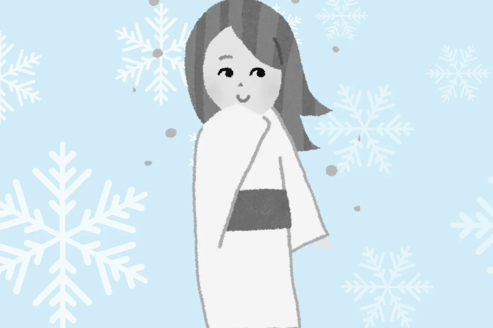
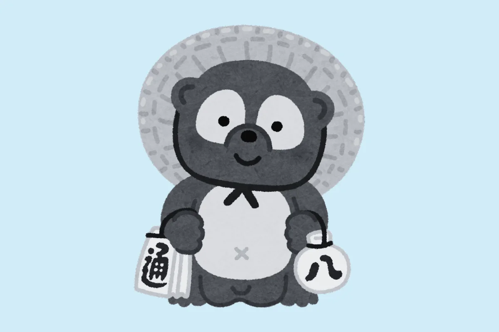
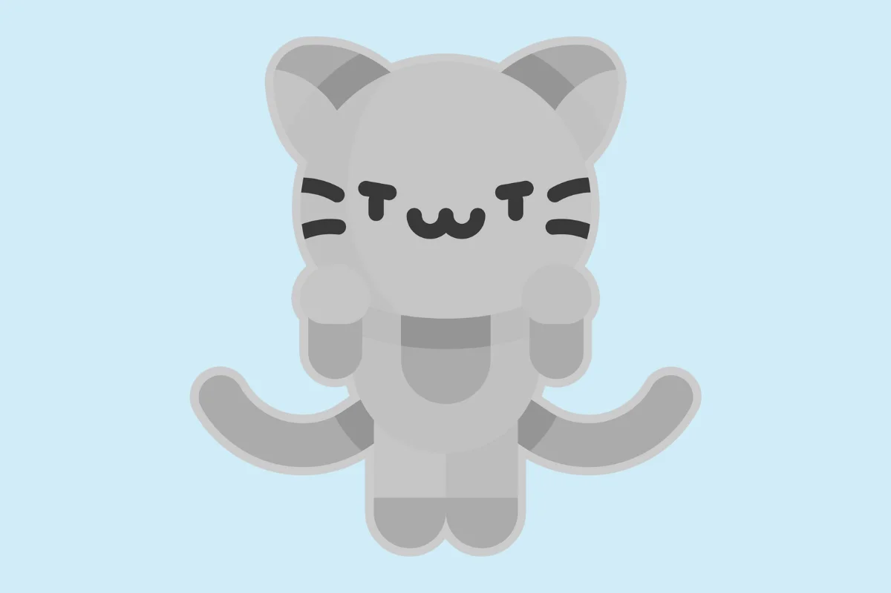
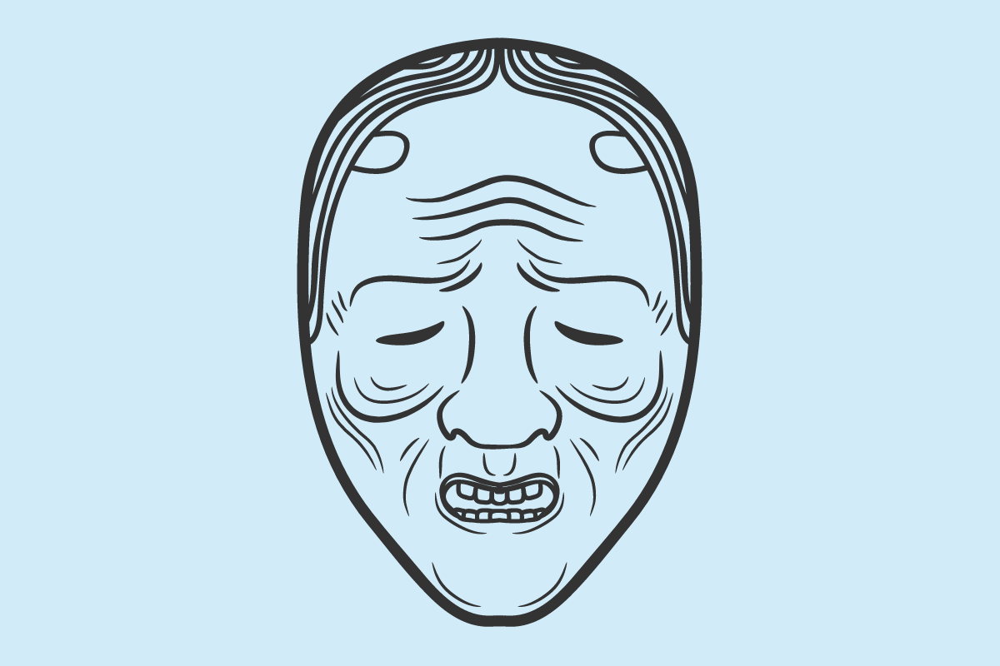

A Yuki-onna é um dos yokais japoneses femininos mais famosos. É associada à neve, descrita como uma mulher alta e bela, com longos cabelelos negros e pele pálida. Ela aparece nas noites de inverno, muitas vezes levando viajantes perdidos à morte com seu sopro congelante. Algumas lendas dizem que a Yuki-onna pode se apaixonar por um humano e viver entre eles.
Yurei são espíritos de pessoas que morreram, frequentemente representados como figuras pálidas em roupas brancas, com cabelos longos e soltos. São bem parecidos com o que chamamos de fantasmas no ocidente. São seres que estão presos no mundo físico, por causa de seus assuntos não resolvidos, que podem ser uma mensagem que precisa ser transmitida, vingança, ou algo relacionado as circunstancias de sua morte. Assim que o que quer que seja que os prende aqui seja resolvido, eles estão livres para seguir seu caminho espiritual na direção de seus ancestrais. Yurei são comuns em histórias de terror japonesas bem como em animes e mangás. Além de serem bem famosos no gênero de terror em filmes.

Tanuki são cães guaxinins místicos com a habilidade de se transformar e mudar de forma. Existem algumas “peculiaridades em sua aparência física”, mas no geral são criaturas bem fofinhas e espertas. Costumam ser retratados como travessos e brincalhões, usando suas habilidades para pregar peças em humanos.Tanuki são símbolos de sorte e prosperidade e suas estátuas fora de lojas e restaurantes são bem comuns no Japão.
Bakeneko é um gato que desenvolve poderes sobrenaturais, incluindo a habilidade de mudar de forma. Este yokai pode trazer sorte ou azar e é frequentemente associado a eventos estranhos ou misteriosos. Acredita-se que um gato pode se tornar um bakeneko se viver muito tempo ou se for bem tratado. Se ele tiver uma cauda muito grande, sua cauda se divide em duas, o que deixa o bakeneko muito mais poderoso, se transformando em um “nekomata”.
Yama-uba é uma velha bruxa das montanhas, conhecida por seu cabelo branco e aparência assustadora. Vive nas montanhas e, às vezes, atrai viajantes para sua cabana para devorá-los. Apesar de sua natureza sinistra, algumas histórias a retratam como uma figura protetora e maternal.
